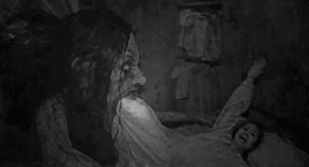

Попытка отравить чудовище
Итан схватил противогаз и побежал к кнопке, но тварь среагировала быстрее, набросившись на него.
Своим телом монстр задела кнопку, и ядовитый газ начал выходить из отверстий в потолке и по бокам.
Его глаза начали кровоточить. В ярости тварь начала бегать по всей комнате, разрушая всё на своём
пути. В какой-то момент она врезалась в дверь, выломав её силой, которую даровал вирус.
Герметичность была нарушена, газ заполнил всю лабораторию. Когда пришли военные, они увидели
учёного, висевшего в петле рядом с директором лаборатории.
«Я их всех убил» - было написано в записке.
